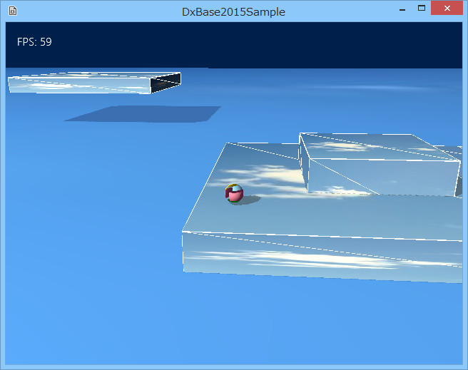
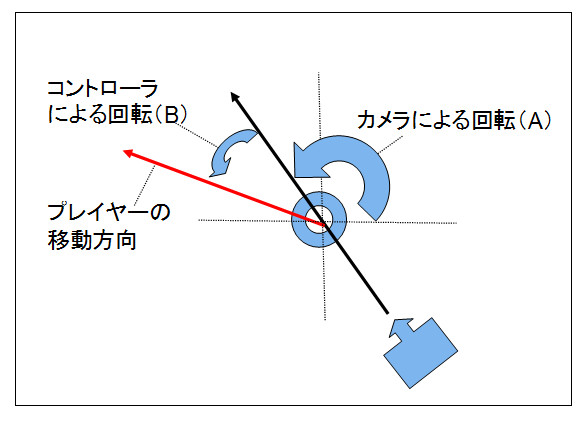
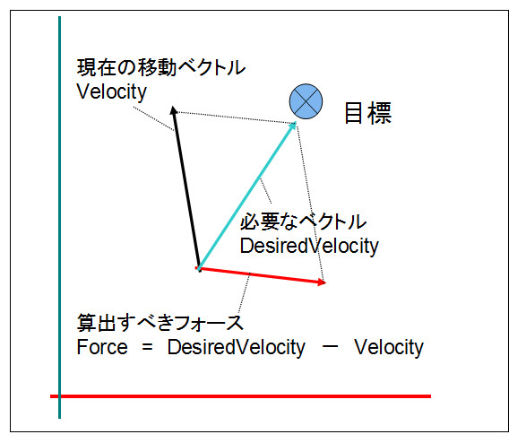

図0006a
//--------------------------------------------------------------------------------------
// class Player : public GameObject;
// 用途: プレイヤー
//--------------------------------------------------------------------------------------
class Player : public GameObject{
shared_ptr< StateMachine<Player> > m_StateMachine; //ステートマシーン
//移動の向きを得る
Vector3 GetAngle();
public:
//構築と破棄
Player(const shared_ptr<Stage>& StagePtr);
virtual ~Player(){}
//初期化
virtual void Create() override;
//アクセサ
shared_ptr< StateMachine<Player> > GetStateMachine() const{
return m_StateMachine;
}
//ジャンプ開始
void StartJump();
//更新
virtual void Update() override;
virtual void Update2() override;
virtual void Update3() override;
};
//--------------------------------------------------------------------------------------
// class DefaultState : public ObjState<Player>;
// 用途: 通常移動
//--------------------------------------------------------------------------------------
class DefaultState : public ObjState<Player>
{
//--------------------------------------------------------------------------------------
// DefaultState(){}
// 用途: コンストラクタ
// 戻り値: なし
// ＊シングルトンのため、Instance()関数を介して呼び出す
//--------------------------------------------------------------------------------------
DefaultState(){}
public:
//--------------------------------------------------------------------------------------
// static DefaultState* Instance();
// 用途: インスタンスの取得
// 戻り値: DefaultStateのインスタンス
//--------------------------------------------------------------------------------------
static shared_ptr<DefaultState> Instance();
//--------------------------------------------------------------------------------------
// virtual void Enter(
// const shared_ptr<Player>& Obj //ステートを保持するオブジェクト
// ) = 0;
// 用途: ステートに入ったときに実行される
// 戻り値: なし（純粋仮想関数）
//--------------------------------------------------------------------------------------
virtual void Enter(const shared_ptr<Player>& Obj)override{}
//--------------------------------------------------------------------------------------
// virtual void Execute(
// const shared_ptr<Player>& Obj //ステートを保持するオブジェクト
// ) = 0;
// 用途: Updateのときに実行される
// 戻り値: なし（純粋仮想関数）
//--------------------------------------------------------------------------------------
virtual void Execute(const shared_ptr<Player>& Obj)override;
//--------------------------------------------------------------------------------------
// virtual void Exit(
// const shared_ptr<Player>& Obj //ステートを保持するオブジェクト
// ) = 0;
// 用途: ステートを出るときに実行される
// 戻り値: なし（純粋仮想関数）
//--------------------------------------------------------------------------------------
virtual void Exit(const shared_ptr<Player>& Obj)override{}
};
//--------------------------------------------------------------------------------------
// class JumpState : public ObjState<Player>;
// 用途: ジャンプ状態
//--------------------------------------------------------------------------------------
class JumpState : public ObjState<Player>
{
//--------------------------------------------------------------------------------------
// JumpState(){}
// 用途: コンストラクタ
// 戻り値: なし
// ＊シングルトンのため、Instance()関数を介して呼び出す
//--------------------------------------------------------------------------------------
JumpState(){}
public:
//--------------------------------------------------------------------------------------
// static shared_ptr<JumpState> Instance();
// 用途: インスタンスの取得
// 戻り値: DefaultStateのインスタンス
//--------------------------------------------------------------------------------------
static shared_ptr<JumpState> Instance();
//--------------------------------------------------------------------------------------
// virtual void Enter(
// const shared_ptr<Player>& Obj //ステートを保持するオブジェクト
// ) = 0;
// 用途: ステートに入ったときに実行される
// 戻り値: なし（純粋仮想関数）
//--------------------------------------------------------------------------------------
virtual void Enter(const shared_ptr<Player>& Obj)override;
//--------------------------------------------------------------------------------------
// virtual void Execute(
// const shared_ptr<Player>& Obj //ステートを保持するオブジェクト
// ) = 0;
// 用途: Updateのときに実行される
// 戻り値: なし（純粋仮想関数）
//--------------------------------------------------------------------------------------
virtual void Execute(const shared_ptr<Player>& Obj)override;
//--------------------------------------------------------------------------------------
// virtual void Exit(
// const shared_ptr<Player>& Obj //ステートを保持するオブジェクト
// ) = 0;
// 用途: ステートを出るときに実行される
// 戻り値: なし（純粋仮想関数）
//--------------------------------------------------------------------------------------
virtual void Exit(const shared_ptr<Player>& Obj)override{}
};
Ａ・・・・・１、２ Ｂ・・・・・１、３、５ Ｃ・・・・・２，３ Ｄ・・・・・２、４
class DefaultState : public ObjState<Player>
{...
static shared_ptr<DefaultState> Instance();
virtual void Enter(const shared_ptr<Player>& Obj)override{}
virtual void Execute(const shared_ptr<Player>& Obj)override;
virtual void Exit(const shared_ptr<Player>& Obj)override{}
そのステートに入ったとき（Enter()関数） そのステートで実行中（Execute()関数） そのステートから抜けるとき（Exit()関数）
shared_ptr< StateMachine<Player> > m_StateMachine; //ステートマシーン
shared_ptr<DefaultState> DefaultState::Instance(){
static shared_ptr<DefaultState> instance;
if (!instance){
instance = shared_ptr<DefaultState>(new DefaultState);
}
return instance;
}
void DefaultState::Execute(const shared_ptr<Player>& Obj){
//コントローラの取得
//コントローラはApp内なのでステートから呼んでも問題ない。
//
//ただし、ステートクラスにはメンバ変数は設けないこと！（シングルトンのため）
auto CntlVec = App::GetApp()->GetInputDevice().GetControlerVec();
if (CntlVec[0].bConnected){
//Aボタンが押された瞬間ならステート変更
if (CntlVec[0].wPressedButtons & XINPUT_GAMEPAD_A){
Obj->GetStateMachine()->ChangeState(JumpState::Instance());
}
}
}
static shared_ptr<DefaultState> instance;
//ステートマシンの構築
m_StateMachine = make_shared< StateMachine<Player> >(GetThis<Player>());
//最初のステートをDefaultStateに設定
m_StateMachine->SetCurrentState(DefaultState::Instance());
//DefaultStateの初期化実行を行う
m_StateMachine->GetCurrentState()->Enter(GetThis<Player>());
//ステートマシンのUpdateを行う
//この中でステートの切り替えが行われる
m_StateMachine->Update();

図0006b
赤い線がプレイヤーの目的の方向です。

図0006c
つまり、目的地へのベクトルから現在の速度を引いたベクトルが、求めるべきフォースとなります。
//初期化
void Player::Create(){
//中略
//操舵系のコンポーネントをつける場合はRigidbodyをつける
auto PtrRedit = AddComponent<Rigidbody>();
//Seek操舵
AddComponent<SeekSteering>();
//重力をつける
auto PtrGravity = AddComponent<Gravity>();
//最下地点
PtrGravity->SetBaseY(0.125f);
//衝突判定をつける
auto PtrCol = AddComponent<CollisionSphere>();
//中略
}
//更新
void Player::Update(){
//中略
Vector3 Angle = GetAngle();
//Transform
auto PtrTransform = GetComponent<Transform>();
//現在位置を取り出す
auto Pos = PtrTransform->GetPosition();
//移動方向を加算。
//移動方向だけがわかればいいので、
//Angleは正規化されてて良い
Pos += Angle;
//Seek操舵
auto PtrSeek = GetComponent<SeekSteering>();
//加算された方向に追いかける
PtrSeek->SetTargetPosition(Pos);
//中略
}